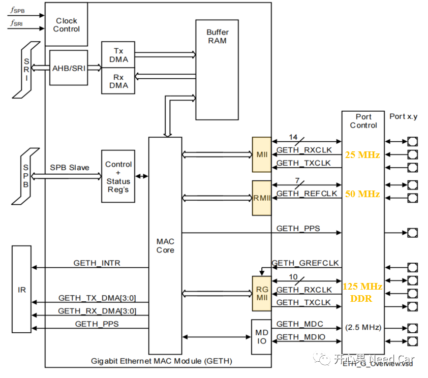
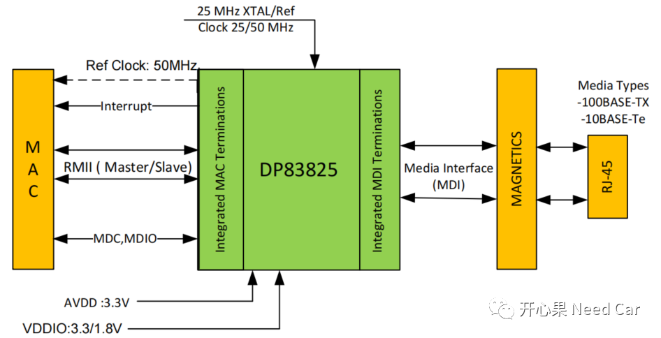
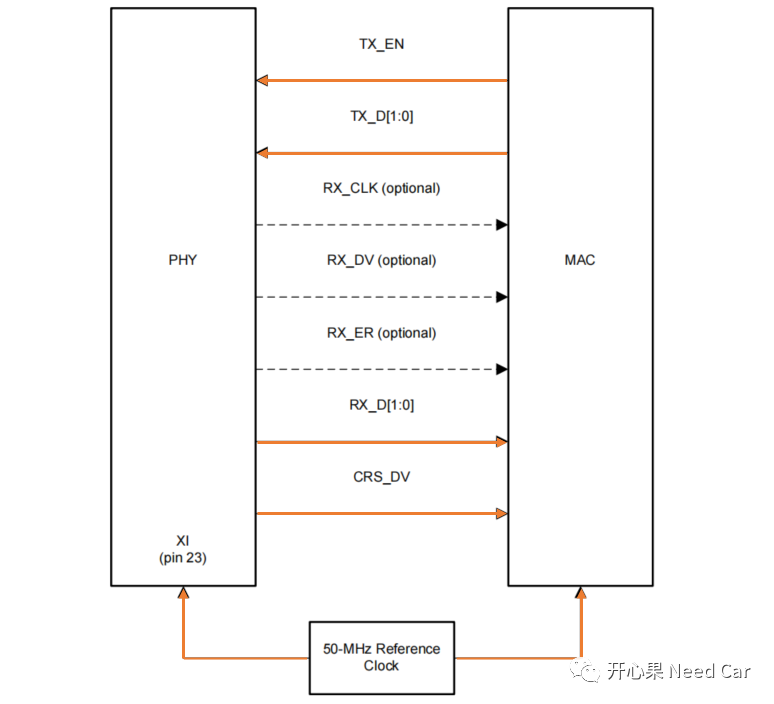
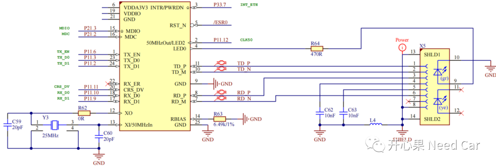
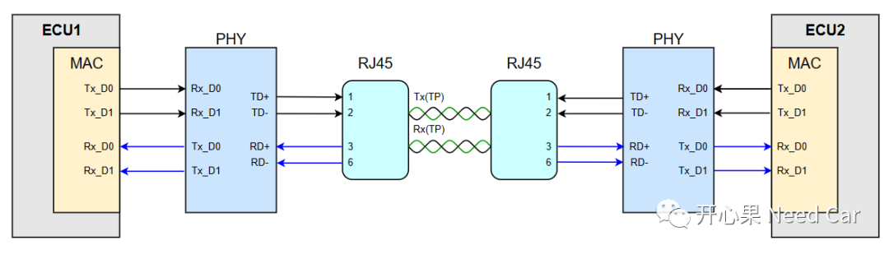
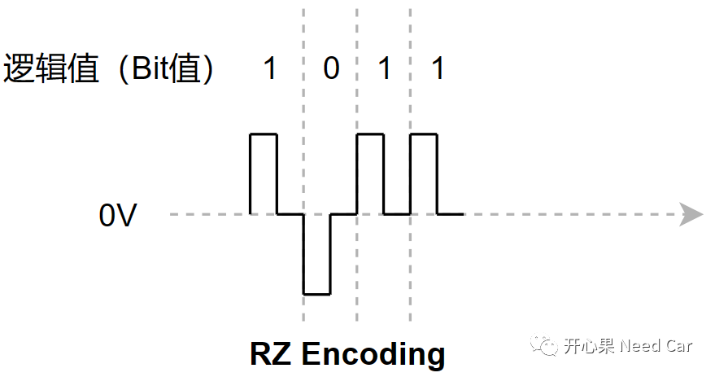
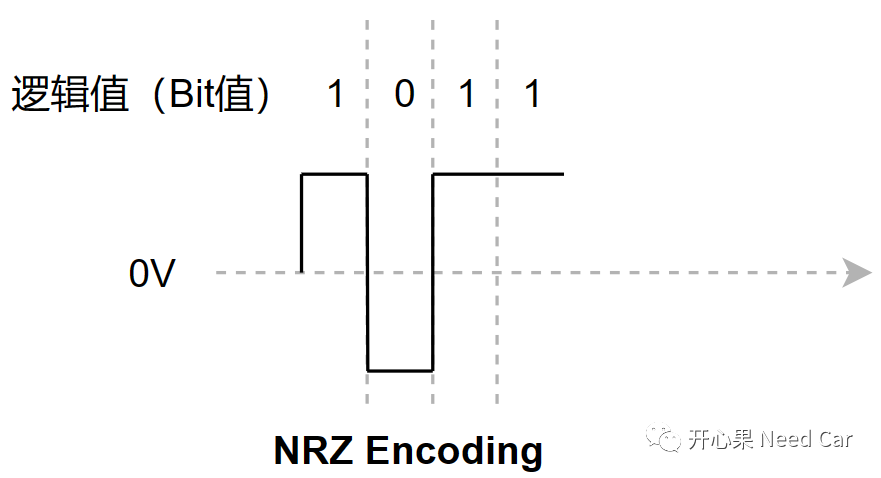
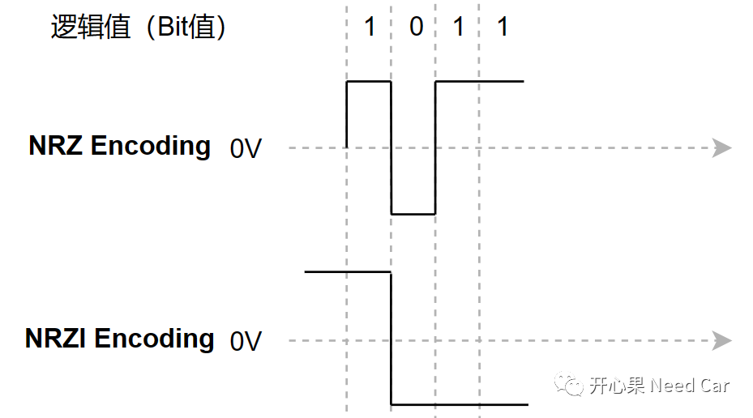

整车的EEA（Electrical/Electronic Architecture，电子电器架构）中，以太网常用的通信速率有100MHz和1000MHz（1G）。本文聚焦100M Ethernet的讨论。100MHz的Ethernet也称为FE（Fast Ethernet，快速以太网），对于100MHz的以太网，汽车中，常用的又包括100BASE-T1和100BASE-TX，以太网的使用中，不知大家是否产生过这样的疑问：
FE的100MHz通信速率如何产生？
FE的100MHz通信速率与通信接口关系？
FE（100Base-TX）的编码规则？
带着这些疑问，本文基于100BASE-TX，展开聊聊。uC的MAC（Media Access Control） Controller发送/接口Ethernet Frame需要依赖PHY芯片（Physical Layer，物理接口层）。项目中，使用不同的速率的Ethernet，对应的PHY接口不同，如下所示：

如上图（TC3xx），PHY接口主要包括MII（Media Independent Interface）、RGMII（Reduced GMII）、RMII（Reduced MII）。一般来说，uC大都会支持1000M Ethernet，但是，出于成本考虑，结合项目实际，会选用不同的PHY芯片，不同的PHY芯片型号，可能支持的Ethernet速率会不同。比如：Realtek RTL8211F(I)/RTL8211FD(I) 可以兼容10Base-T, 100Base-TX, 1000Base-T IEEE 802.3，而DP83825I只兼容10Base-T, 100Base-TX IEEE 802.3。所以，在使用Ethernet的MAC接口时，需要先确认PHY能兼容的接口有哪些。PHY（DP83825）与MAC、RJ45之间的物理连接关系如下所示：
本文主要讨论100M Ethernet，而DP83825I兼容的PHY接口为RMII。RMII接口由7根信号线外加一个时钟参考线。- TX_EN(TransmitEnable)：数据发送使能信号；
- RX_ER(ReceiveError)：数据接收错误指示信号（可选）；
- CLK_REF：外部时钟源提供50MHz参考时钟，由PHY芯片提供给MAC。
- CRS_DV：此信号是由MII接口中的RX_DV和CRS两个信号合并而成。
以DP83825I为例，PHY、MAC的接口连接如下所示：

如上图，TC3xx的GETH MAC如果与DP83825I PHY能正常通信，不使用Rx_CLK、RX_DV，RX_ER可以选用。
DP83825I PHY中使用的通信信号线示意如下：

2、FE（100Base-TX）的100MHz通信速率如何产生？
两个ECU使用100Base-TX的以太网通信连接示意如下所示：
对于RMII接口，参考时钟为外部时钟，时钟频率50MHz，收/发过程中，均使用两条数据线，因此，传输速率100MHz（2 * 50MHz）就是这么来的，即：一个Clock可以传输2个bit。这里的100是指PHY从MAC接收/发送的速率，实际总线上传输的模拟信号（差分信号）带宽并不是100MHz。模拟信号带宽不是100MHz，是多少呢？答：模拟信号的速率与以太网的编码格式有关。100BASE-TX使用4B5B、NRZI（Non Return Zero Inverted Code，反向不归零编码）、MLT-3（Multi Level Transmit，多电平传输）方法进行编码和解码，进而生成差分电压。（一）4B5B编码
MAC会通过多条发送数据线（Tx_D[n]）将要发送的信息并行发送给PHY，PHY收到数据以后，先进行串行序列化处理，之后进行4B5B编码。
4B5B编码就是使用5Bit表示4Bit（实际要发送的数据），即：在4bit待发送数据中插入0或者1构成5bit。4Bit数据，可以构成2^4 = 16种组合，而5bit，可以构成2^5 = 32种组合，所以会有一部分5bit组合用于控制。4B5B对应编码、解码表如下所示：
示例：PHY收到MAC发送的数据0000 0001，经过4B5B编码后，变成11110 01001，如下所示：
经过4B5B编码以后，编码效率降低，因为插入了一个无效bit，编码率 = 4/5 =80%。PHY从MAC端接收数据时，速率是100Mbps，经过4B5B编码后，数据带宽变成125MHz，如果使用5类非屏蔽双绞线（UTP）传输，不可行，因为5类非屏蔽双绞线最高支持 100MHz 的数据带宽。所以，数据经过4B5B编码后，需要使用其他方式降低带宽，以便于使用5类非屏蔽双绞线（UTP）传输数据。100Base-TX常用降低带宽的方法有哪些呢？答：本文讨论NRZI和 MLT-3组合的方式。即：先用NRZI，将带宽降低一半（62.5MHz），再经过MLT-3编码，带宽进一步降低一半（31.25MHz）。理解NRZI之前，我们需要先理解RZ（Return to Zone，归零编码）。RZ编码规则：正电平表示逻辑1，负电平表示0，每次传输一个逻辑电平后需要返回零电平。
eg：RZ方式传输1011数据时，电平变化如下所示：

对于RZ，每次操作都需要归零处理，增加了带宽，因此，又提出了NRZ（No Return to Zone，非归零编码），即：高电平表示1，低电平表示0。
eg：NRZ方式传输1011数据时，电平变化如下所示：

但是，使用NRZ方式，虽然不浪费带宽，但是，当传输的数据中，出现连续1或者0时，接收端会因识别不到电平变化可能采样错误，即：无法与发送端进行时钟同步。所以，又进一步的引入了NRZI编码方式，你可能会说：NRZI也没有同步的能力。如果发送端先发送一个同步包，接收端即可进行同步，而100Base-TX采用双绞线差分传输，适合使用此方式。
NRZI的编码规则是什么呢？答：0表示电平有反转，1表示电平没有反转。
eg：NRZ、NRZI方式传输1011数据时，电平变化对比如下所示：
MLT-3编码使用3个电平（正电平、负电平、零电平）编码要传输的数据，MLT-3的编码规则：2、如果下一输入为“1”，则产生跳变，此时又分两种情况。- 如果前一输出是“＋1”或“－1”，则下一输出为“0”；
- 如果前一输出是“0”，其信号极性和最近一个非“0”相反。
eg：MLT-3方式传输1011数据时，电平变化对比如下所示：点击下方关注，一起聊聊Autosar/嵌入式，如果需要，联系作者进群，给你更专业的解答